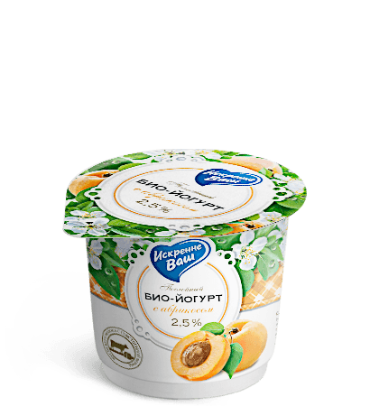

- 
- Жирность
- 2,5%
- Вес
- 120 г.
- Условия хранения
- 10 суток при t 4 ±2 °C
Био–йогурт послойный
«Искренне Ваш»
Био – йогурт послойный – новинка в ассортиментной линейке молочных продуктов «Искренне Ваш».
Такой йогурт поделен на два слоя. Верхний слой представляет собой живой натуральный био-йогурт без сахара, который содержит комплекс полезных бифидобактерий.
Нижний слой состоит из натуральных ягод, перетертых с сахаром, они наполняют продукт изысканным вкусом и ароматом.
В ассортименте представлено 6 вкусов био-йогурта: клубника, черника, малина, смородина, абрикос и натуральный био-йогурт.